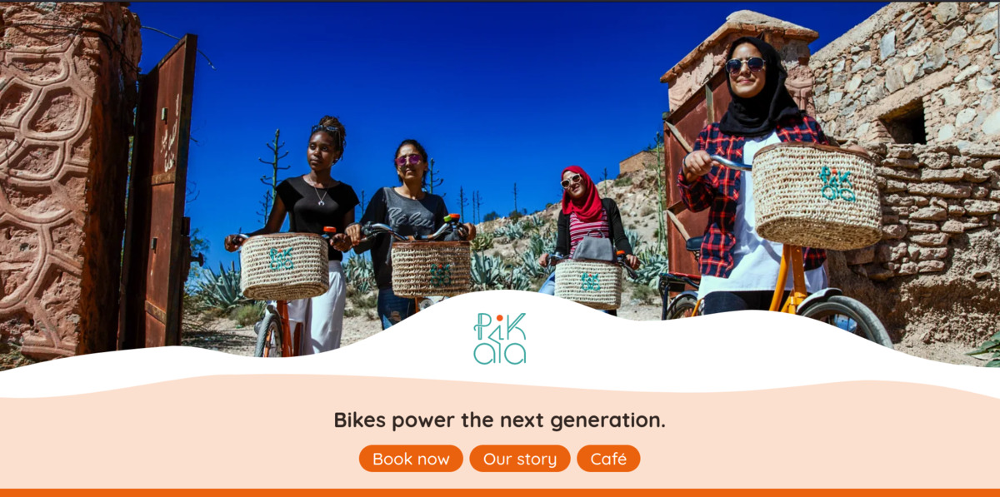
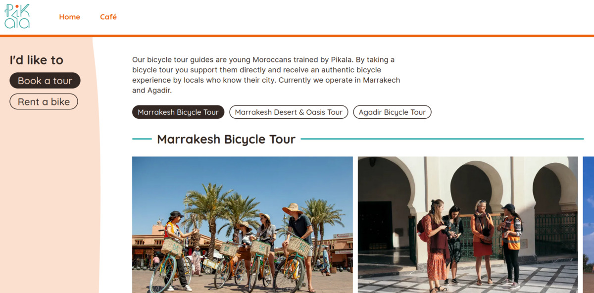
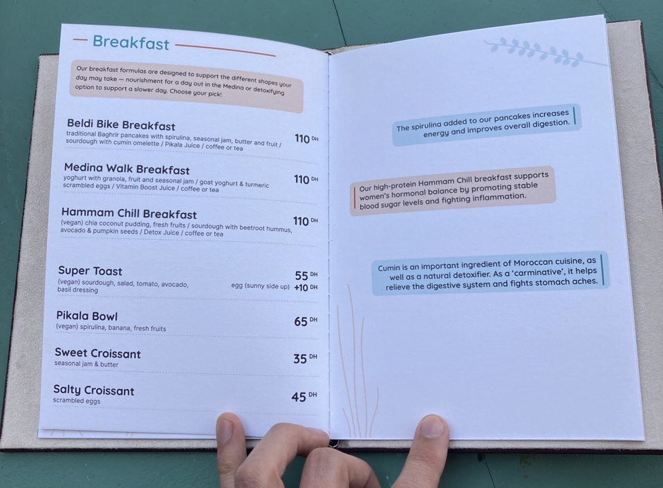
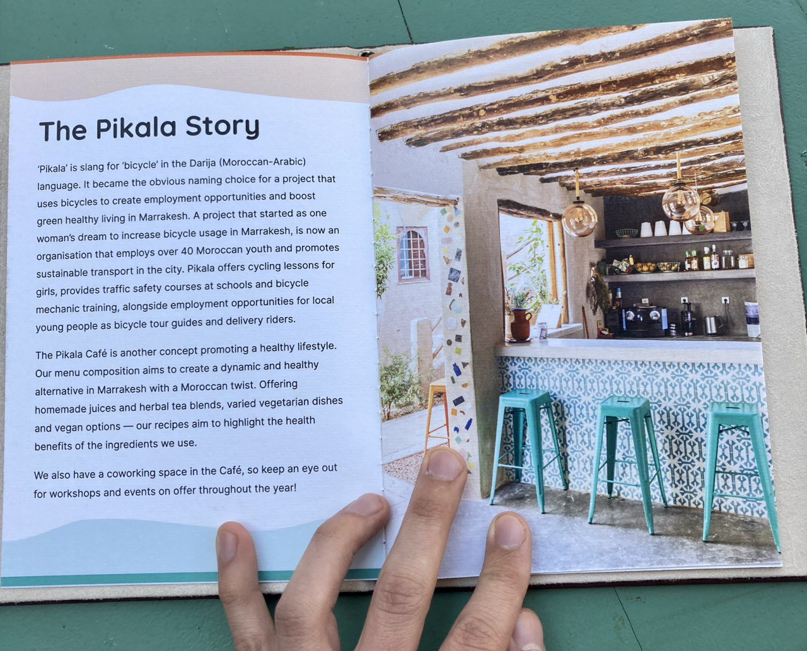

Pikala
In early 2024, I have designed and developed the new website for Pikala, a Moroccan non-profit using bicycles to promote sustainable mobility, education and social progress in a number of Moroccan cities.
I developed a new visual language based on the existing Pikala brand, which is suitable for both digital and print publications. The website itself is a performant statically generated site with GitHub acting as the CMS.
I used the visual language to design the new Pikala Café menu booklet, working with chef Paulina Teleki and copy-writer Charlotte Coleman to highlight the nutritional benefits of their dishes.
